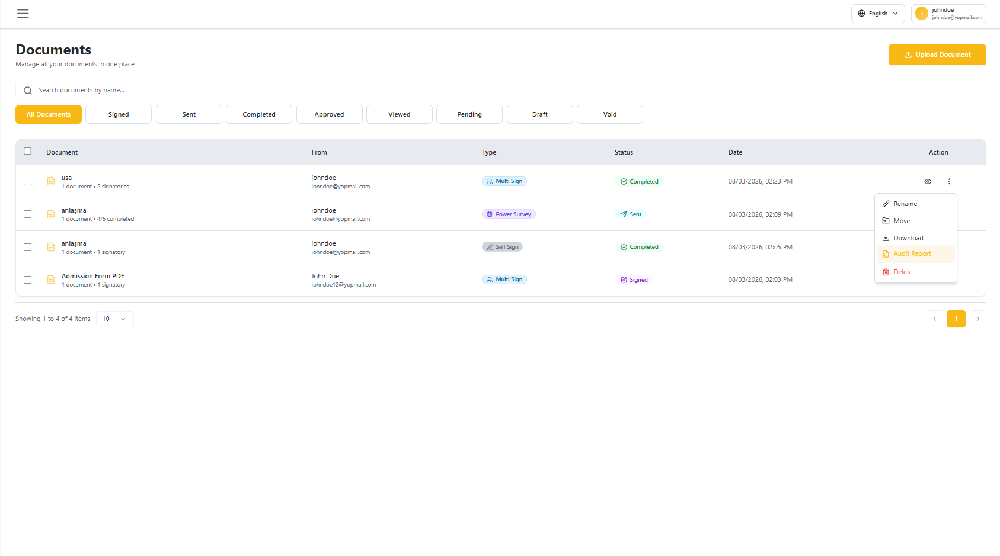
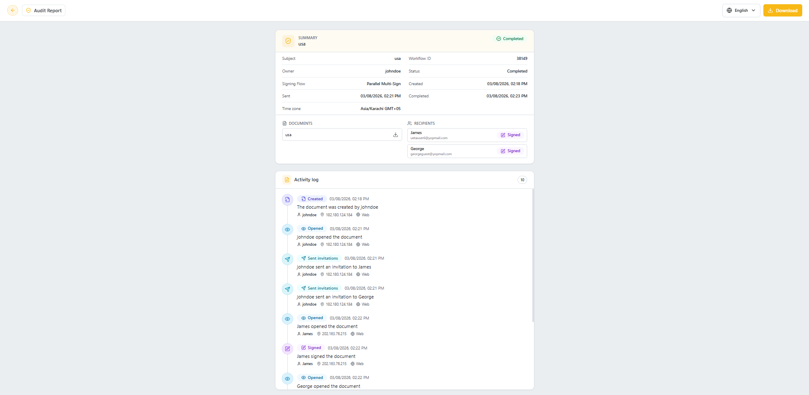
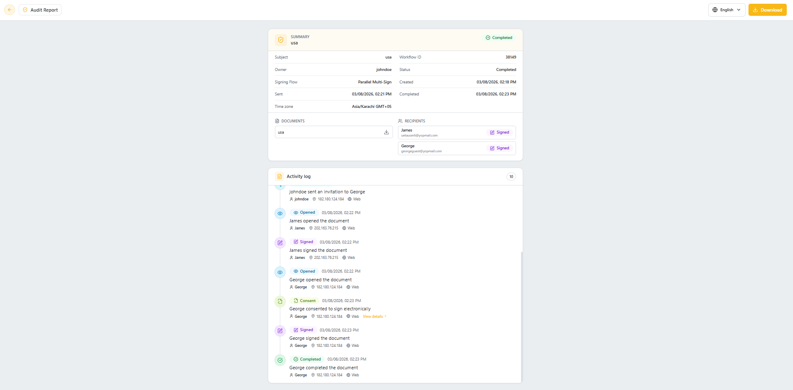
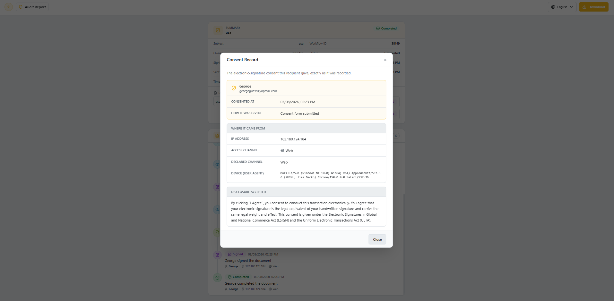

Audit Report
Overview
The Audit Report is a dedicated, full-page timeline of everything that happened to a document — from creation to completion. It replaces the older summary popup with a complete activity log, including a detailed Consent Record for every recipient's e-signature consent.
Opening the Audit Report
- Go to the Documents list.
- Click the ⋮ (three-dot) menu on the document you want to inspect.
- Select Audit Report.

Summary and Activity Log
The Audit Report opens as a full page with two sections:
- Summary – Subject, Owner, Signing Flow, Status, Workflow ID, Sent/Created/Completed timestamps, Time zone, the list of Documents, and the list of Recipients with their current status.
- Activity log – A chronological, timestamped list of every event on the document (Created, Opened, Sent invitations, Consent, Signed, Completed), each showing who performed it, their IP address, and access channel.
You can download the document and its evidence report from the Download button in the top-right corner.

Viewing Consent Details
Whenever a recipient consents to sign electronically, a Consent entry appears in the Activity log with a View details link.

Click View details to open the Consent Record dialog, showing exactly what was captured at the moment of consent:
- Recipient name and email
- Consented at timestamp and How it was given
- Where it came from — IP address, access channel, declared channel, and device (user agent)
- Disclosure accepted — the full consent text the recipient agreed to

Click Close to return to the Activity log.